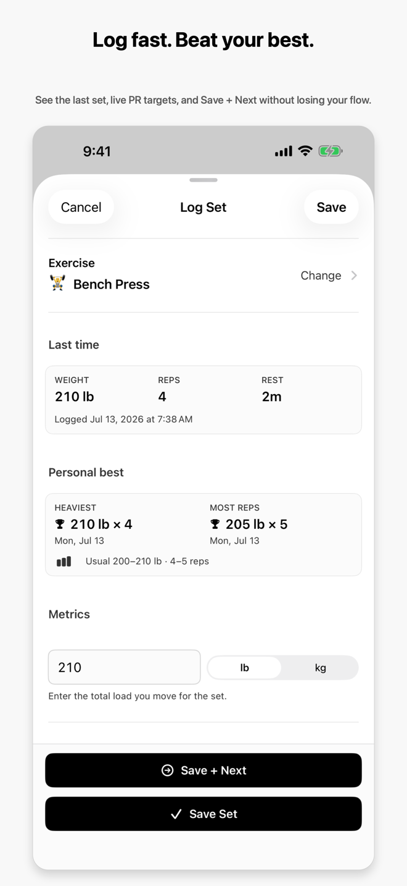

Log
A set in seconds.
Weight, reps, RPE, rest — captured before the plates stop spinning. marble remembers your last set so repeating it is one tap, and a rest timer waits in the Dynamic Island.
- Save + Next keeps you moving through a session.
- Siri and the Action button log a set without opening the app.
- Scan turns a handwritten page into logged sets, on-device.
